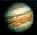

| Mercurio | ||
 | Venus | |
 | La Tierra | |
 | Marte | |
|  | Jupiter | |
 | Saturno | |
 | Urano | |
 | Neptuno | |
 | Plutón | |
| Deja tu opinión | ||
MARTE: EL PLANETA ROJO
Gira alrededor del sol a una distancia media de 228 millones de kilómetros, por lo que emplea 686.98 días en dar una vuelta completa a su alrededor. Es el cuarto en cuanto a lejanía de la estrella. Tiene dos pequeños satélites, Deimos y Fobos (ver imagen), descubiertos en 1877.
Marte aparece geológicamente diversificado y complejo. El hemisferio meridional esta sembrado de cráteres y presenta una altitud media de 1 a 3 Km. sobre el nivel de referencia, definido como aquel en el que la presión atmosférica es igual a 6.1 milibares (por debajo de este nivel, en los lugares donde la temperatura lo permitiera, el agua podría existir en estado líquido). En el hemisferio septentrional, los cráteres de impacto son relativamente escasos, y la mayor parte de la superficie se encuentra por debajo del nivel de referencia topográfico.
Dos tipos de terreno caracterizan al hemisferio sur: una corteza muy antigua, saturada de cráteres y recorrida por numerosos canales de cientos de kilómetros de longitud y varias decenas de kilómetros de ancho, que parecen haber sido producidos por inundaciones catastróficas, y llanuras algo más recientes, que interrumpen de vez en cuando la monotonía del paisaje.
En el hemisferio norte, el panorama es completamente diferente: volcanes gigantescos, corrientes solidificadas de lava, llanuras, quebradas y cañones caracterizan una superficie extremadamente variada.
Su estructura interna no se conoce bien. Probablemente, Marte perdió hace tiempo gran parte de su calor interno y es casi seguro que no contiene un núcleo líquido. Esta situación tiene la consecuencia de que su campo magnético, caso de existir, será muy débil.
El clima es bastante inclemente. En verano, en el ecuador, la temperatura puede superar los 20 ºC poco después del mediodía, pero desciende a -80ºC durante la noche. La atmósfera está constituida casi exclusivamente por dióxido de carbono (95%), con una pequeña porción de nitrógeno (2.7%), argón (1.6%) y otros gases.